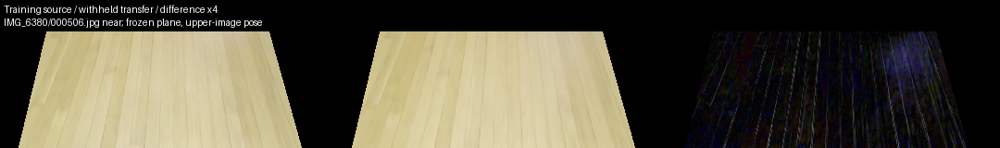
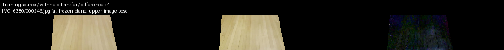
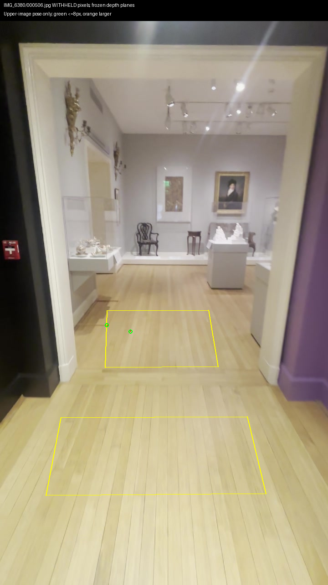
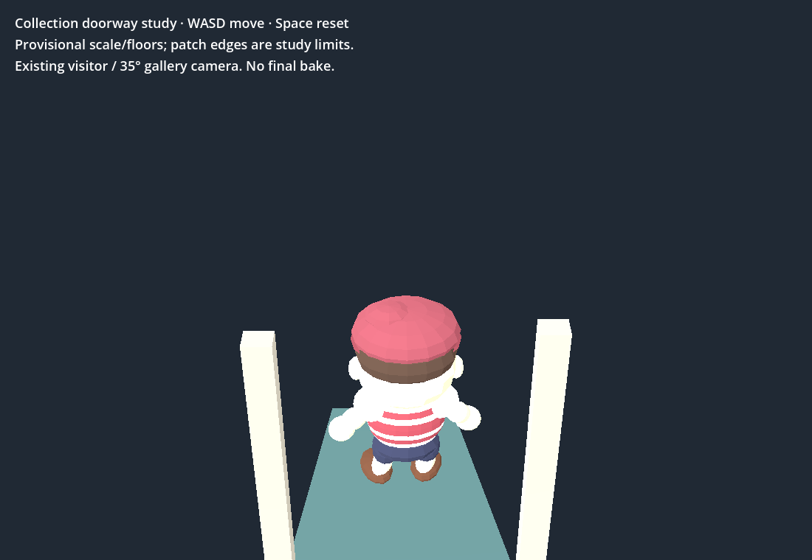
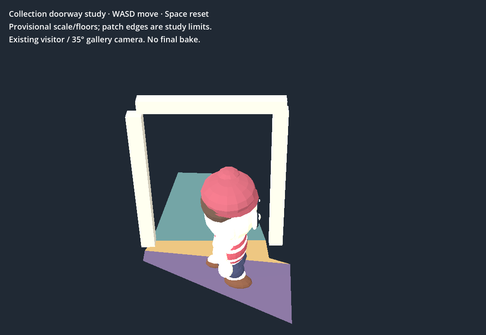

Diagnostic only. No new floor/collision acceptance or Viewer changes. Shifted controls score better in frame506; near coverage is absent in246. Native/browser bounded doorway walk passes; Shell has four known failures.
Measurements and shifted controls · Checks · Source hashes and spend · Existing bounded walk




